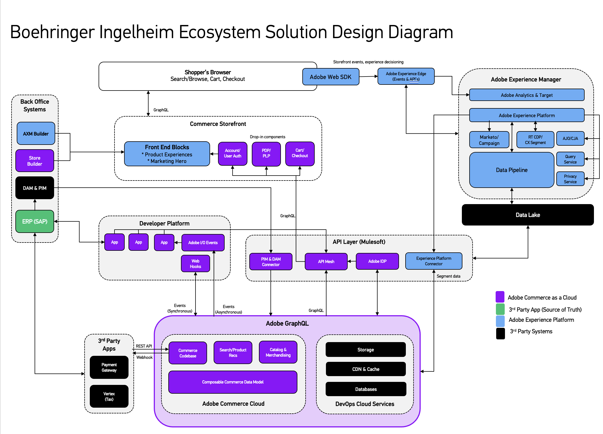
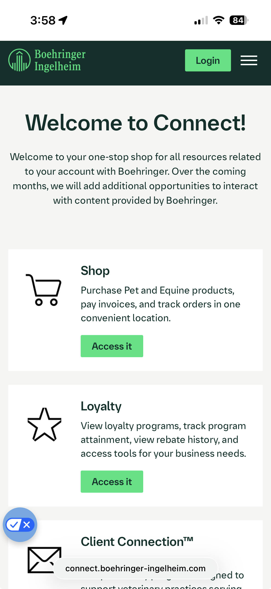
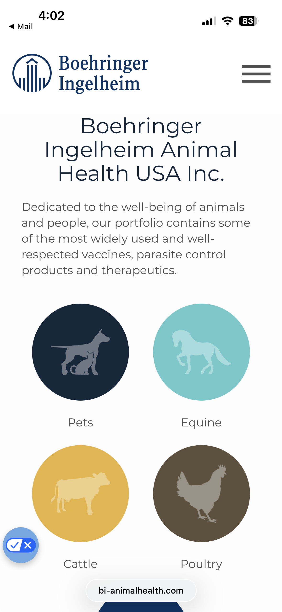

Unified Boehringer Ingelheim's fragmented regional webshops into a single Adobe Commerce Cloud ecosystem across 5 countries, while surviving a live Oracle-to-SAP ERP migration.
Boehringer Ingelheim was running a patchwork of legacy webshops across markets—each with its own pricing, tax, compliance, and fulfillment logic. Some markets were still heavily phone and fax-driven. At the same time, BI was planning a global Oracle-to-SAP migration. Any commerce downtime during that transition meant lost orders, broken vet relationships, and revenue risk across five countries.
10x+ online sales growth across 5 countries
5 countries and 2 ERP backbones converged into one global commerce platform.
Success Criteria: One global storefront. Local rules enforced per country. Zero commerce downtime during ERP cutover. Vets move from phone/fax to digital self-service.
Publicis Sapient (Corra) · BI Global Teams · Adobe
Owns: storefront build + integration tracks
Handoff: country execution plans
Role: roadmap, cutover, cross-vendor decisions
Accountable: zero-downtime migration
Owns: country rules + business approvals
Handoff: market localization sign-off
Owns: platform support + escalation
Handoff: critical issue resolution
Key Decision: Build one global reference storefront first, then localize per country—rather than letting each market build independently. This was the decision that made the whole program scalable.



Mapped existing webshops, ERP flows, and country-specific rules. Stood up multi-vendor team structure across Corra, Publicis Sapient, and BI.
Built the Adobe Commerce Cloud reference storefront — the single source of truth that all markets would clone and localize.
Localized for pilot countries. Enforced local tax, prescription gating, currency, and shipping rules within the global framework.
Executed ERP migration without taking stores offline. Commerce platform kept trading while the ERP backbone shifted underneath.
All 5 countries live. 10x+ online sales, 15%+ order throughput, 12%- CS escalations. Adobe and Publicis Sapient published case studies.
How Measured: Online sales lift tracked via platform analytics vs. pre-migration baseline. Order throughput measured by exception rate in ERP. CS escalations tracked by support ticket volume pre/post launch.
Adobe published a formal case study on Boehringer Ingelheim's global eCommerce transformation, highlighting the unified platform architecture and multi-market rollout approach.
Publicis Corra documented the BI engagement as a global B2B commerce transformation, focusing on ERP-agnostic architecture and phased market rollout execution.
Supplemental case-study documentation detailing BI program delivery, migration resilience, and cross-market transformation outcomes.